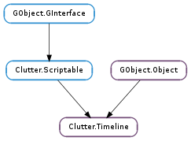

| Subclasses: | Clutter.Transition |
|---|
| static | new(msecs) |
| add_marker(marker_name, progress) | |
| add_marker_at_time(marker_name, msecs) | |
| advance(msecs) | |
| advance_to_marker(marker_name) | |
| clone() | |
| get_auto_reverse() | |
| get_cubic_bezier_progress() | |
| get_current_repeat() | |
| get_delay() | |
| get_delta() | |
| get_direction() | |
| get_duration() | |
| get_duration_hint() | |
| get_elapsed_time() | |
| get_loop() | |
| get_progress() | |
| get_progress_mode() | |
| get_repeat_count() | |
| get_step_progress() | |
| has_marker(marker_name) | |
| is_playing() | |
| list_markers([position]) | |
| pause() | |
| remove_marker(marker_name) | |
| rewind() | |
| set_auto_reverse(reverse) | |
| set_cubic_bezier_progress(c_1, c_2) | |
| set_delay(msecs) | |
| set_direction(direction) | |
| set_duration(msecs) | |
| set_loop(loop) | |
| set_progress_func(func, *data) | |
| set_progress_mode(mode) | |
| set_repeat_count(count) | |
| set_step_progress(n_steps, step_mode) | |
| skip(msecs) | |
| start() | |
| stop() |
| Name | Type | Flags | Description |
|---|---|---|---|
| auto-reverse | bool | r/w | Whether the direction should be reversed when reaching the end |
| delay | int | r/w | Delay before start |
| direction | Clutter.TimelineDirection | r/w | Direction of the timeline |
| duration | int | r/w | Duration of the timeline in milliseconds |
| loop | bool | r/w | Should the timeline automatically restart |
| progress-mode | Clutter.AnimationMode | r/w | How the timeline should compute the progress |
| repeat-count | int | r/w | How many times the timeline should repeat |
| Name | Parameters | Return | Description |
|---|---|---|---|
| completed | The Clutter.Timeline ::completed signal is emitted when the timeline’s elapsed time reaches the value of the Clutter.Timeline :duration property. This signal will be emitted even if the Clutter.Timeline is set to be repeating. If you want to get notification on whether the Clutter.Timeline has been stopped or has finished its run, including its eventual repeats, you should use the Clutter.Timeline ::stopped signal instead. | ||
| marker-reached | str, int | The ::marker-reached signal is emitted each time a timeline reaches a marker set with Clutter.Timeline.add_marker_at_time (). This signal is detailed with the name of the marker as well, so it is possible to connect a callback to the ::marker-reached signal for a specific marker with: .. code-block:: c clutter_timeline_add_marker_at_time (timeline, “foo”, 500); clutter_timeline_add_marker_at_time (timeline, “bar”, 750); g_signal_connect (timeline, “marker-reached”, G_CALLBACK (each_marker_reached), NULL); g_signal_connect (timeline, “marker-reached::foo”, G_CALLBACK (foo_marker_reached), NULL); g_signal_connect (timeline, “marker-reached::bar”, G_CALLBACK (bar_marker_reached), NULL); In the example, the first callback will be invoked for both the “foo” and “bar” marker, while the second and third callbacks will be invoked for the “foo” or “bar” markers, respectively. | |
| new-frame | int | The ::new-frame signal is emitted for each timeline running timeline before a new frame is drawn to give animations a chance to update the scene. | |
| paused | The ::paused signal is emitted when Clutter.Timeline.pause () is invoked. | ||
| started | The ::started signal is emitted when the timeline starts its run. This might be as soon as Clutter.Timeline.start () is invoked or after the delay set in the Clutter.Timeline :delay property has expired. | ||
| stopped | bool | The Clutter.Timeline ::stopped signal is emitted when the timeline has been stopped, either because Clutter.Timeline.stop () has been called, or because it has been exhausted. This is different from the Clutter.Timeline ::completed signal, which gets emitted after every repeat finishes. If the Clutter.Timeline has is marked as infinitely repeating, this signal will never be emitted. |
| Name | Type | Access |
|---|---|---|
| parent_instance | GObject.Object | r |
Bases: GObject.Object, Clutter.Scriptable
The Clutter.Timeline structure contains only private data and should be accessed using the provided API
| Parameters: | msecs (int) – Duration of the timeline in milliseconds |
|---|---|
| Returns: | the newly created Clutter.Timeline instance. Use GObject.Object.unref () when done using it |
| Return type: | Clutter.Timeline |
Creates a new Clutter.Timeline with a duration of msecs.
| Parameters: |
|
|---|
Adds a named marker that will be hit when the timeline has reached the specified progress.
Markers are unique string identifiers for a given position on the timeline. Once timeline reaches the given progress of its duration, if will emit a ::marker-reached signal for each marker attached to that particular point.
A marker can be removed with Clutter.Timeline.remove_marker (). The timeline can be advanced to a marker using Clutter.Timeline.advance_to_marker ().
See also: Clutter.Timeline.add_marker_at_time ()
| Parameters: |
|---|
Adds a named marker that will be hit when the timeline has been running for msecs milliseconds.
Markers are unique string identifiers for a given position on the timeline. Once timeline reaches the given msecs, it will emit a ::marker-reached signal for each marker attached to that position.
A marker can be removed with Clutter.Timeline.remove_marker (). The timeline can be advanced to a marker using Clutter.Timeline.advance_to_marker ().
See also: Clutter.Timeline.add_marker ()
| Parameters: | msecs (int) – Time to advance to |
|---|
Advance timeline to the requested point. The point is given as a time in milliseconds since the timeline started.
The timeline will not emit the Clutter.Timeline ::new-frame signal for the given time. The first ::new-frame signal after the call to Clutter.Timeline.advance () will be emit the skipped markers.
| Parameters: | marker_name (str) – the name of the marker |
|---|
Advances timeline to the time of the given marker_name.
Like Clutter.Timeline.advance (), this function will not emit the Clutter.Timeline ::new-frame for the time where marker_name is set, nor it will emit Clutter.Timeline ::marker-reached for marker_name.
| Returns: | a new Clutter.Timeline, cloned from timeline |
|---|---|
| Return type: | Clutter.Timeline |
Create a new Clutter.Timeline instance which has property values matching that of supplied timeline. The cloned timeline will not be started and will not be positioned to the current position of the original timeline: you will have to start it with Clutter.Timeline.start ().
The only cloned properties are:
| Returns: | True if the timeline should automatically reverse, and False otherwise |
|---|---|
| Return type: | bool |
Retrieves the value set by Clutter.Timeline.set_auto_reverse ().
| Returns: | True if the timeline is using a cubic bezier progress more, and False otherwise |
|---|---|
| Return type: | bool, c_1: Clutter.Point, c_2: Clutter.Point |
Retrieves the control points for the cubic bezier progress mode.
| Returns: | the current repeat |
|---|---|
| Return type: | int |
Retrieves the current repeat for a timeline.
Repeats start at 0.
| Returns: | the delay in milliseconds. |
|---|---|
| Return type: | int |
Retrieves the delay set using Clutter.Timeline.set_delay ().
| Returns: | the amount of time in milliseconds elapsed since the last frame |
|---|---|
| Return type: | int |
Retrieves the amount of time elapsed since the last Clutter.Timeline ::new-frame signal.
This function is only useful inside handlers for the ::new-frame signal, and its behaviour is undefined if the timeline is not playing.
| Returns: | the direction of the timeline |
|---|---|
| Return type: | Clutter.TimelineDirection |
Retrieves the direction of the timeline set with Clutter.Timeline.set_direction ().
| Returns: | the duration of the timeline, in milliseconds. |
|---|---|
| Return type: | int |
Retrieves the duration of a Clutter.Timeline in milliseconds. See Clutter.Timeline.set_duration ().
| Returns: | the full duration of the Clutter.Timeline |
|---|---|
| Return type: | int |
Retrieves the full duration of the timeline, taking into account the current value of the Clutter.Timeline :repeat-count property.
If the Clutter.Timeline :repeat-count property is set to -1, this function will return GObject.G_MAXINT64.
The returned value is to be considered a hint, and it’s only valid as long as the timeline hasn’t been changed.
| Returns: | current elapsed time in milliseconds. |
|---|---|
| Return type: | int |
Request the current time position of the timeline.
| Returns: | True if the timeline is looping |
|---|---|
| Return type: | bool |
Gets whether timeline is looping
| Returns: | the normalized current position in the timeline. |
|---|---|
| Return type: | float |
The position of the timeline in a normalized [-1, 2] interval.
The return value of this function is determined by the progress mode set using Clutter.Timeline.set_progress_mode (), or by the progress function set using Clutter.Timeline.set_progress_func ().
| Returns: | a Clutter.AnimationMode |
|---|---|
| Return type: | Clutter.AnimationMode |
Retrieves the progress mode set using Clutter.Timeline.set_progress_mode () or Clutter.Timeline.set_progress_func ().
| Returns: | the number of repeats |
|---|---|
| Return type: | int |
Retrieves the number set using Clutter.Timeline.set_repeat_count ().
| Returns: | True if the timeline is using a step progress mode, and False otherwise |
|---|---|
| Return type: | bool, n_steps: int, step_mode: Clutter.StepMode |
Retrieves the parameters of the step progress mode used by timeline.
| Parameters: | marker_name (str) – the name of the marker |
|---|---|
| Returns: | True if the marker was found |
| Return type: | bool |
Checks whether timeline has a marker set with the given name.
| Returns: | True if timeline is currently playing |
|---|---|
| Return type: | bool |
Queries state of a Clutter.Timeline.
| Parameters: | msecs (int) – the time to check, or -1 |
|---|---|
| Returns: | a newly allocated, None terminated string array containing the names of the markers. Use GLib.strfreev () when done. |
| Return type: | [str] |
Retrieves the list of markers at time msecs. If msecs is a negative integer, all the markers attached to timeline will be returned.
Pauses the Clutter.Timeline on current frame
| Parameters: | marker_name (str) – the name of the marker to remove |
|---|
Removes marker_name, if found, from timeline.
Rewinds Clutter.Timeline to the first frame if its direction is Clutter.TimelineDirection.FORWARD and the last frame if it is Clutter.TimelineDirection.BACKWARD.
| Parameters: | reverse (bool) – True if the timeline should reverse the direction |
|---|
Sets whether timeline should reverse the direction after the emission of the Clutter.Timeline ::completed signal.
Setting the Clutter.Timeline :auto-reverse property to True is the equivalent of connecting a callback to the Clutter.Timeline ::completed signal and changing the direction of the timeline from that callback; for instance, this code:
static void
reverse_timeline (ClutterTimeline *timeline)
{
ClutterTimelineDirection dir = clutter_timeline_get_direction (timeline);
if (dir == CLUTTER_TIMELINE_FORWARD)
dir = CLUTTER_TIMELINE_BACKWARD;
else
dir = CLUTTER_TIMELINE_FORWARD;
clutter_timeline_set_direction (timeline, dir);
}
...
timeline = clutter_timeline_new (1000);
clutter_timeline_set_repeat_count (timeline, -1);
g_signal_connect (timeline, "completed",
G_CALLBACK (reverse_timeline),
NULL);
can be effectively replaced by:
timeline = clutter_timeline_new (1000);
clutter_timeline_set_repeat_count (timeline, -1);
clutter_timeline_set_auto_reverse (timeline);
| Parameters: |
|
|---|
Sets the Clutter.Timeline :progress-mode of timeline to Clutter.AnimationMode.CUBIC_BEZIER, and sets the two control points for the cubic bezier.
The cubic bezier curve is between (0, 0) and (1, 1). The X coordinate of the two control points must be in the [ 0, 1 ] range, while the Y coordinate of the two control points can exceed this range.
| Parameters: | msecs (int) – delay in milliseconds |
|---|
Sets the delay, in milliseconds, before timeline should start.
| Parameters: | direction (Clutter.TimelineDirection) – the direction of the timeline |
|---|
Sets the direction of timeline, either Clutter.TimelineDirection.FORWARD or Clutter.TimelineDirection.BACKWARD.
| Parameters: | msecs (int) – duration of the timeline in milliseconds |
|---|
Sets the duration of the timeline, in milliseconds. The speed of the timeline depends on the Clutter.Timeline :fps setting.
| Parameters: | loop (bool) – True for enable looping |
|---|
Sets whether timeline should loop.
This function is equivalent to calling Clutter.Timeline.set_repeat_count () with -1 if loop is True, and with 0 if loop is False.
| Parameters: |
|
|---|
Sets a custom progress function for timeline. The progress function will be called by Clutter.Timeline.get_progress () and will be used to compute the progress value based on the elapsed time and the total duration of the timeline.
If func is not None, the Clutter.Timeline :progress-mode property will be set to Clutter.AnimationMode.CUSTOM_MODE.
If func is None, any previously set progress function will be unset, and the Clutter.Timeline :progress-mode property will be set to Clutter.AnimationMode.LINEAR.
| Parameters: | mode (Clutter.AnimationMode) – the progress mode, as a Clutter.AnimationMode |
|---|
Sets the progress function using a value from the Clutter.AnimationMode enumeration. The mode cannot be Clutter.AnimationMode.CUSTOM_MODE or bigger than Clutter.AnimationMode.ANIMATION_LAST.
| Parameters: | count (int) – the number of times the timeline should repeat |
|---|
Sets the number of times the timeline should repeat.
If count is 0, the timeline never repeats.
If count is -1, the timeline will always repeat until it’s stopped.
| Parameters: |
|
|---|
Sets the Clutter.Timeline :progress-mode of the timeline to Clutter.AnimationMode.STEPS and provides the parameters of the step function.
| Parameters: | msecs (int) – Amount of time to skip |
|---|
Advance timeline by the requested time in milliseconds
Starts the Clutter.Timeline playing.
Stops the Clutter.Timeline and moves to frame 0